Outils¶
E-mails envoyés¶
Les utilisateurs peuvent consulter la liste des e-mails automatiques envoyés.
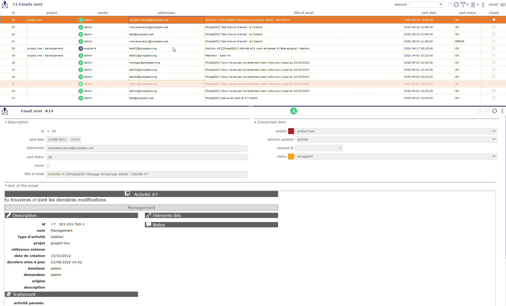
écran des e-mails envoyés¶
Toutes les informations sur l’e-mail, y compris le statut indiquant si l’e-mail a été correctement envoyé ou non.
Vous pouvez voir dans le flux d’activité de l’élément la trace de l’envoi de l’e-mail correspondant avec le sujet et le texte du message.
E-mails à envoyer¶
Vous devez activer l’option Activer le regroupement des e-mails dans les paramètres globaux
Les e-mails programmés seront regroupés dans cet écran avant leur envoi automatique selon la période saisie dans les paramètres globaux
Rapport planifié¶
Dans les rapports, vous pouvez planifier l’envoi d’e-mails pour des rapports précis.
Vous pouvez obtenir la liste et les détails de cette programmation sur cet écran
Cliquez sur le bouton  pour annuler la programmation
pour annuler la programmation
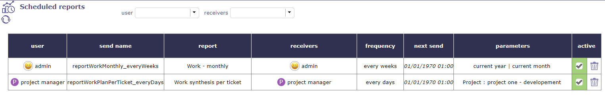
Écran des rapports planifiés¶
Voir aussi
Alertes¶
Les utilisateurs peuvent consulter les alertes envoyées.
Par défaut, les administrateurs peuvent voir toutes les alertes envoyées, et les autres utilisateurs ne voient que leurs propres alertes.
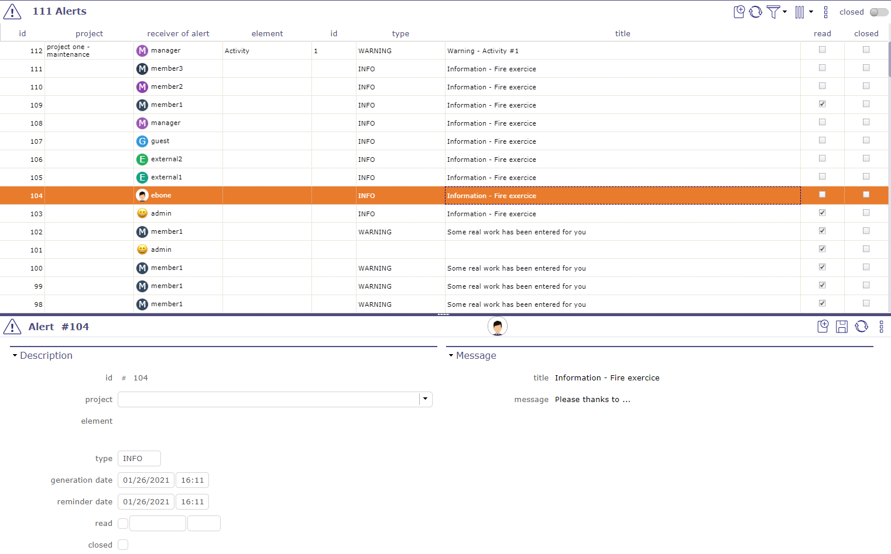
Écran des alertes¶
Le bouton Marquer comme lu est disponible si l’alerte utilisateur n’est pas encore marquée « lue ».
Messages¶
Vous pouvez définir des messages qui seront affichés sur l’écran de connexion et l’écran Aujourd’hui.
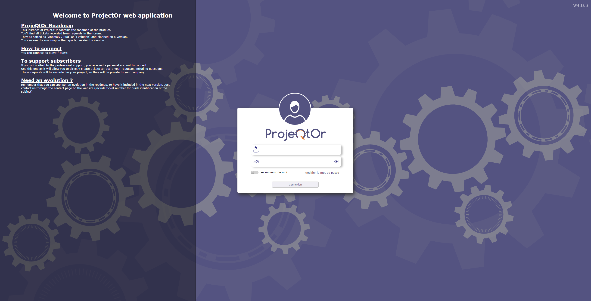
Écran de connexion avec message¶
Cochez la case afficher sur l’écran de connexion pour voir votre message sur l’écran de connexion.
Mentions légales¶
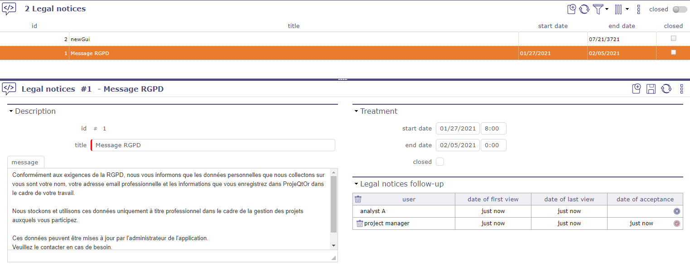
Écran des mentions légales¶
Le Règlement Général sur la Protection des Données (RGPD) régit le traitement des données personnelles sur le territoire de l’Union Européenne.
Avant tout, il s’agit d’informer les personnes sur ce que vous faites de leurs données et de respecter leurs droits. En tant que responsable de traitement, ou en tant que sous-traitant, vous devez prendre des mesures pour garantir que ces données sont utilisées dans le respect de la vie privée des personnes concernées.
Vous pouvez définir un message « légal » qui sera affiché lors de votre connexion depuis l’écran d’accueil.
Pour que ce message disparaisse, il doit être fait défiler jusqu’au bouton de confirmation de lecture.
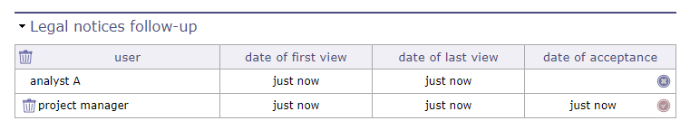
Écran des mentions légales¶
Cela vous permet d’avoir un suivi en temps réel des utilisateurs qui ont confirmé la lecture de ce message.
Note
Qu’est-ce que le RGPD ?
L’abréviation RGPD signifie « Règlement Général sur la Protection des Données ». Le RGPD régit le traitement des données personnelles sur le territoire de l’Union Européenne.
Le contexte juridique s’adapte pour suivre les évolutions des technologies et de nos sociétés (usage accru du numérique, développement du commerce en ligne, etc.).
Ce nouveau règlement européen est une continuité de la loi Informatique et Libertés française de 1978 et renforce le contrôle par les citoyens de l’usage qui peut être fait des données les concernant.
Il harmonise les règles en Europe en offrant un cadre juridique unique aux professionnels. Il contribue à développer leurs activités numériques dans l’UE sur la base de la confiance des utilisateurs.
Visitez le site web de la CNIL ici
Importer des données¶
Importe des données depuis des fichiers CSV ou XLSX.
Sélectionnez le type d’élément dans la liste.
Sélectionnez le format de fichier (CSV ou XLSX).
Sélectionnez le fichier.
Cliquez sur le bouton Importer des données pour démarrer l’import.
Rapport de l’import
Les données non importées car non reconnues comme champ apparaissent en texte gris dans le tableau des résultats.
Les données volontairement non importées (car doivent être calculées) apparaissent en texte bleu dans le tableau des résultats.
Importer des utilisateurs
Le champ mot de passe doit être coupé et collé depuis la base de données car il est crypté.
Si vous saisissez un mot de passe lisible, les utilisateurs ne pourront pas se connecter.
Avertissement
Si vous souhaitez créer de nouveaux utilisateurs, ne mettez pas d’id car si l’id existe déjà, il sera remplacé par le nouveau (avec possibilité d’effacer l’utilisateur admin…).
Gardez toujours à l’esprit que votre import peut avoir un impact sur l’utilisateur administrateur.
Assurez-vous donc de conserver un accès administrateur opérationnel.
Import des versions de documents
Deux façons d’importer des versions de documents : en décrivant uniquement la version avec ses champs standard et en décrivant le document et la version (le nom des champs de la version sera suivi de “(DocumentVersion)”, ou de sa traduction dans la langue actuelle).
Le fichier d’import CSV peut également inclure le champ importFile qui donnera le lien vers la version.
Le champ cible qui peut être défini pour supprimer, le fichier à importer est supprimé après import ou un nom de répertoire. Le fichier à importer est déplacé vers ce répertoire après import) ou rien (le fichier à importer n’est pas modifié).
Format de fichier¶
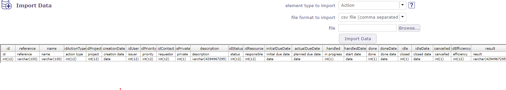
Format du fichier d’import¶
Le contenu du fichier importé doit correspondre à la description du type d’élément.
Pour connaître les données pouvant être importées, cliquez sur le bouton .
{kind=link}
Noms des colonnes
La première ligne du fichier doit contenir le nom des champs.
Les noms des colonnes peuvent contenir des espaces (pour une meilleure lisibilité).
Les espaces seront supprimés pour obtenir le nom de la colonne.
Astuce
Consultez la classe modèle. Les noms sont les mêmes.
Format de date
Les dates sont attendues au format « AAAA-MM-JJ ».
Processus d’import des données¶
Le processus d’import est effectué selon le type d’élément, la colonne et la valeur de la colonne.
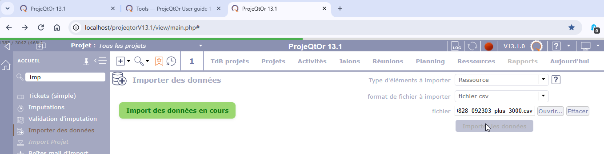
Progression de l’import des données¶
Une fois démarré, le processus d’import peut prendre de quelques minutes à plusieurs heures, selon le volume de données à importer.
Une barre de progression s’affiche pendant l’import des données. Elle disparaît lorsque l’import est terminé ou lorsque la requête reçoit un signal de fin.
La barre de progression s’affiche dans la barre supérieure de la fenêtre du navigateur. Vous pouvez quitter l’écran d’import de données sans interrompre le processus d’import.
Le résultat de l’import est enregistré dans un fichier. Lorsque vous revenez sur l’écran d’import, le résultat de votre dernier import s’affiche.
Si un import est encore en cours, il ne sera pas interrompu par d’autres actions. Toutefois, vous ne pouvez pas démarrer un nouvel import tant que l’import en cours n’est pas terminé.
Colonne Id
Vous pouvez ajouter une colonne « id » dans le fichier.
Si un identifiant est fourni, l’import tente de mettre à jour l’élément correspondant. L’import échoue si l’élément spécifié n’existe pas.
Si aucun identifiant n’est fourni, l’import crée un nouvel élément à partir des données importées.
Tables liées
Pour les colonnes correspondant à des tables liées (« idXxxx »), vous pouvez utiliser l’un des noms de colonne suivants :
« idXxxx »
« Xxxx » (sans « id »)
le libellé de la colonne tel qu’affiché à l’écran.
Si la valeur de la colonne est numérique, elle est considérée comme le code de l’élément.
Si la valeur de la colonne contient une valeur non numérique, elle est considérée comme le nom de l’élément et le code sera recherché par le nom.
Dans tous les cas, les colonnes sans valeur ne sont pas mises à jour. Cela vous permet de mettre à jour uniquement certains champs d’un élément existant.
Pour effacer une donnée, saisissez la valeur « NULL » (non sensible à la casse).
Important
N’importez pas la valeur du « travail réel » sur les tickets, même si elle est spécifiée dans le fichier d’import.
Import automatique¶
Les imports peuvent être automatisés. Les fichiers placés dans un répertoire défini seront automatiquement importés.
Les paramètres d’import automatique doivent être définis dans les Paramètres globaux.
La tâche de fond doit être démarrée par Console d’Administration.
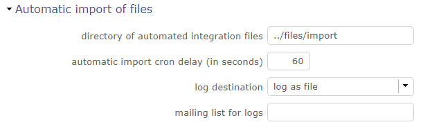
Fichiers d’import automatique¶
Les fichiers doivent respecter quelques règles de base.
Le format du nom de fichier est : « Classe »_« Horodatage ».« ext » : Exemple : Ticket_20241231_235959.csv)
Horodatage défini pour pouvoir stocker plusieurs fichiers dans le répertoire.
Le format est libre. Le format recommandé est « AAAAMMJJ_HHMMSS ».
Extension de fichier représentant son format. Les extensions valides sont CSV et XLSX.
Format de fichier
Les fichiers doivent suivre le Format de fichier de ProjeQtOr et doivent être complets et cohérents.
Astuce
Les fichiers ne doivent pas être créés directement dans le dossier d’import.
Ils doivent être créés dans un dossier temporaire puis déplacés ensuite.
Processus d’import
Les fichiers correctement importés sont déplacés vers un sous-dossier « done » du dossier d’import.
Si une erreur se produit lors de l’import d’un fichier, le fichier complet est déplacé vers le sous-dossier « error » du dossier d’import, même s’il n’y a qu’une seule erreur sur de nombreux autres éléments correctement intégrés.
Vous pouvez obtenir le résultat sous forme de fichier log et/ou de résumé par e-mail.
Boîte de réception pour l’import¶
Avec les boîtes de réception d’import automatique, vous transférez un fichier à importer par e-mail.
Configurez une boîte de réception d’import qui n’insérera pas un élément mais lira le fichier joint (CSV ou XLSX)
et l’importera comme s’il avait été placé dans le répertoire d’import automatique.
Note
Le fichier joint sera au format « Class_XXXXXXXX.xlsx » ou « Class_XXXXXXXX.csv ».
Class est la classe des éléments à importer.
XXXXXXXX est un horodatage utilisé pour distinguer les fichiers (généralement AAAAMMJJ).
Avertissement
Contrairement à l’import automatique, basé sur un répertoire, l’horodatage ne sera pas utilisé pour ordonner les fichiers à importer ; c’est l’ordre de réception des e-mails qui déterminera cet ordre.
L’adresse e-mail d’envoi doit être connue et correspondre à un utilisateur ayant le droit de créer des éléments de la classe à importer.
L’import doit être effectué avec les droits de cet utilisateur.
Cela signifie qu’un chef de projet qui importe des activités ne pourra créer des activités que sur ses propres projets.
Les résultats de l’import seront renvoyés par e-mail à l’adresse de l’expéditeur. Le format sera identique à celui de l’import manuel.
Environnement cloné¶
Vous pouvez dupliquer l’environnement complet (données et code) pour former un environnement de simulation.
Important
Le programme CRON doit être démarré et en cours d’exécution pour que la demande de simulation puisse être prise en compte et générée.
La gestion de l’environnement cloné¶
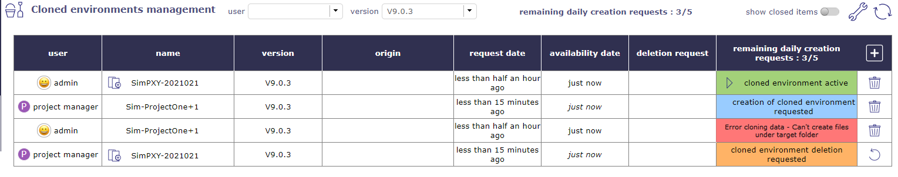
Gestion de l’environnement cloné¶
Cet écran vous permet de gérer vos demandes de nouveaux environnements de simulation, de les suivre ou de demander la suppression d’une simulation particulière.
Vous pouvez également suivre les demandes d’autres utilisateurs en fonction de vos profils et de vos droits.
Cliquez sur pour demander la création d’un nouvel espace de simulation, une fenêtre contextuelle apparaîtra vous permettant de faire votre demande.
{kind=link}
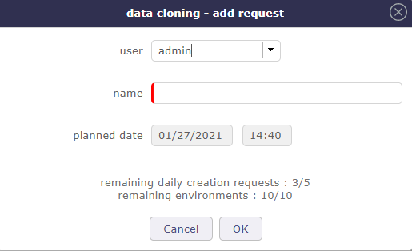
Ajouter une demande¶
Identifiez le profil faisant la demande, nommez votre espace et confirmez votre demande en cliquant sur OK.
Note
Les bases de données simulées auront toujours un nom préfixé par simu_ suivi du nom de la simulation.
Code couleur
Bleu : Demande en cours de création
Orange : Avertissement (demande de suppression)
Rouge : Erreur lors de la création de l’environnement (chemin, droits…)
Vert : Environnement créé
Accéder à l’environnement cloné
Lorsque votre simulation est prête, statut vert, vous pouvez ouvrir votre environnement cloné.
Cliquez sur pour lancer l’environnement.
{kind=link}
Un nouvel onglet s’ouvre avec une nouvelle session ProjeQtOr. Authentifiez-vous, vous pouvez commencer à travailler dans votre environnement.
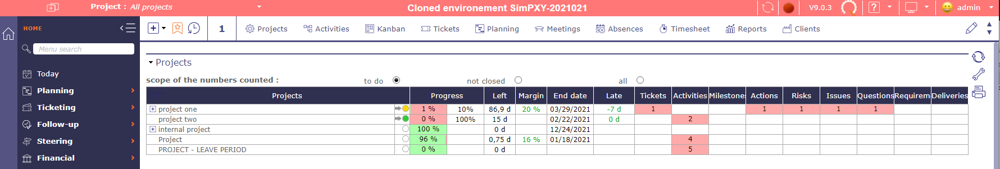
Session de l’environnement cloné¶
La zone d’instance devient rouge lorsque vous êtes dans un espace de simulation.
Tous les écrans ou fonctions ne seront pas accessibles dans cet espace.
Par exemple, vous ne pourrez pas demander et créer un nouvel espace de simulation dans votre environnement cloné.
Copier et supprimer un environnement cloné
Vous avez effectué une simulation réussie sur l’un de vos environnements clonés et vous souhaitez que la copie exécute d’autres tests sans toucher à la simulation.
Copiez simplement cet environnement. L’origine de la copie sera alors indiquée dans la liste avec un raccourci pour y accéder.
Les demandes de suppression sont stockées dans la table de simulation. Elles sont traitées dans le même processus que les créations, mais toujours en priorité pour libérer de l’espace avant d’allouer de nouvelles ressources à de nouvelles instances.
Astuce
Pour éviter une gestion des droits trop large et des problèmes d’invasion du serveur, toutes les simulations (code) seront placées dans un répertoire « simulation » en dehors du répertoire principal de ProjeQtOr.
Ainsi, si l’instance principale est accessible via l’url « projeqtor.xxx.fr », les simulations seront accessibles via l’url : projeqtor.xxx.fr/simulation/nom_de_simulation.
Administration des demandes de simulation¶
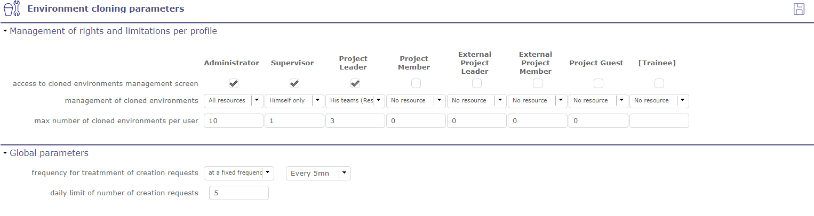
Paramètres de l’environnement cloné¶
Ces paramètres sont également accessibles depuis les environnements simulés.
Cliquez sur sur l’écran de gestion des simulations. Vous pouvez limiter le nombre total de simulations par profil.
{kind=link}
Cette limitation peut présenter certains avantages :
Éviter la saturation du serveur.
Obliger les utilisateurs à nettoyer leurs fichiers.
Limiter la dégradation des performances causée par la création d’un environnement simulé
Les demandes de suppression sont décrémentées. Si les limites sont atteintes, l’écran de demande de création d’un environnement simulé est bloqué.
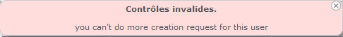
Exemple d’une demande invalide due à trop de demandes de création.¶
Le temps nécessaire pour créer un espace de simulation peut varier. Selon votre base de données, vos serveurs ou même si plusieurs demandes sont générées simultanément.
C’est une opération qui peut prendre du temps. C’est pourquoi vous pouvez définir des fréquences pour les demandes de création.
Fréquence fixe
Analyse les demandes de création à intervalles réguliers et démarre la génération de l’environnement de simulation dès qu’une demande est rencontrée.
À une heure donnée
Afin d’éviter tout ralentissement de la base de données, vous pouvez programmer les générations des espaces à une heure précise de la journée. Cela permet de les programmer en dehors des heures de travail.
La création d’une instance de simulation est un processus lourd pour le serveur : duplication du code, duplication des données. C’est pourquoi lors de la génération de votre espace de simulation, toutes les données ne sont pas copiées. Comme les données archivées (closes), l’historique des mises à jour, les documents et fichiers joints, tous les e-mails d’automatisation et notifications.